Primavera/Verano 2021
Como una buena seguidora de tendencias tengo que hablarte de lo que llevaremos en esta primavera. Este año las semanas de la moda se han celebrado en un clima de incertidumbre y cambios como no podía ser de otra manera dada la situación excepcional de pandemia.
Muchas firmas consagradísimas han cambiado el tradicional formato desfile por presentaciones digitales o fashion films, como Gucci o Saint Laurent, en lo que muchos ven, no como una situación excepcional, si no como una necesidad de renovación de la manera de presentar las tendencias en el mundo actual.
Sea como sea, quiero aproximarte a las principales tendencias que más veremos en la Primavera/Verano 2021. He apreciado una línea continuista y conservadora en la mayoría de las colecciones, que han sido significativamente más cortas que otros años, pero la creatividad sigue presente en piezas maravillosas que me han enamorado.
Estas son las 13 tendencias elegidas:
Blazer XL
Es tan versátil y favorecedor que es una compra segura para tu fondo de armario. El formato traje con pantalón a juego es un clásico indiscutible, pero también queda ideal con nuestros tejanos favoritos o con una falda larguísima en clave mínimal. La forma más original de llevarlo es sin duda con un sencillo body debajo y haciendo las veces de mini vestido.
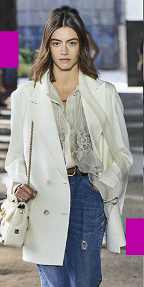
Crochet
La artesanía y el handmade cobrarán una importancia especial la próxima temporada. El trabajo de ganchillo de nuestras abuelas sube a la pasarela en prendas confeccionadas con esta técnica artesanal con resultados espectaculares.
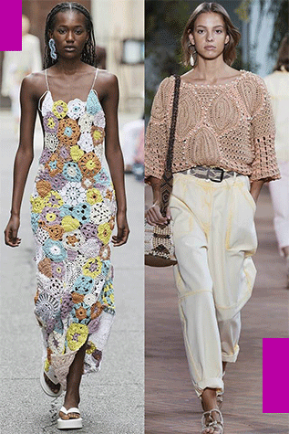
Vestido floral
La palabra primavera nos hace pensar en flores, y en el caso de los diseñadores de moda no es distinto y por eso es uno de los estampados más vistos la temporada que viene. De línea más sencilla y campestre, pasando por la elegancia bucólica, hasta llegar a los de ceremonia. El vestido y el estampado floral es un binomio que nunca defrauda.
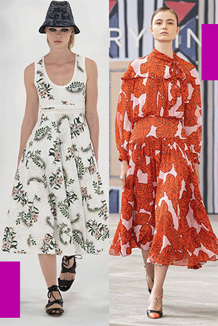
Short
Las temperaturas suben, y los pantalones se acortan. El short ha dejado de ser solo una prenda deportiva y hoy en día se admite en looks más formales, incluso para ir al trabajo.
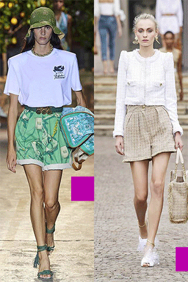
Jeans
Las pasarelas también se han rendido a este básico de nuestro armario. La línea que proponen las pasarelas es un denim más bien desgastado y de línea recta, cómodos y estilosos, justo como me gustan. Quedan perfectos tanto con un top de vestir, como con una camisa oversize .
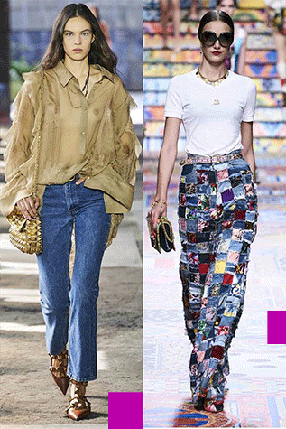
Color lila
Este tono delicado y sutil no puede faltar en ningún armario, y este año menos, con las propuestas tan interesantes que hemos visto en pasarela. Nos hemos enamorado del vestido camisero con detalles pañuelo. El modelo con volantes en el pecho nos ha parecido una apuesta perfecta para un evento familiar. Nos imaginamos poniéndonos con todos nuestros básicos la camisa oversize y queremos un conjunto de superposiciones tan romántico.
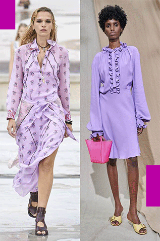
Top bandeau
Esta primavera los trajes chaqueta se llevarán con un estilo muy sexy, ya que los tops se reducen a la mínima expresión. ¡Super cool!
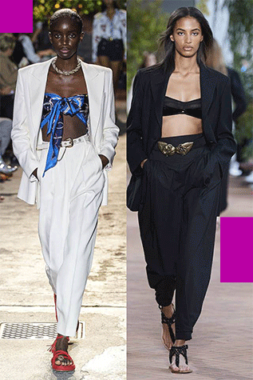
Estilo nomada
Aunque la situación no nos permite viajar, las pasarelas nos hacen soñar con estilismos de mujeres viajeras y glamurosas. Fendi sofistica a la viajera con unas tres piezas de lino donde destacan los bordados de los guardapolvos y el largo bermuda del pantalón. El vestido sahariano en ante nos transporta a un safari de pura elegancia y por su parte.
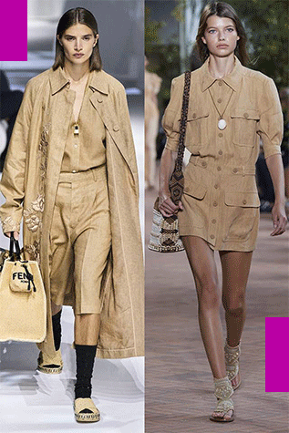
Maxi gabardina
Si quieres renovar tu gabardina la próxima primavera, tienes que elegirla tamaño XL.
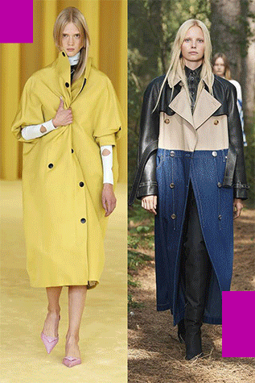
Dar en el blanco
El blanco es pura inspiración en las colecciones veraniegas temporada tras temporada y este año no iba a ser diferente. Vestidos minimalistas, en trajes de estilo casual y vestidos lady o conjuntos de tintes ochenteros se benefician de la pureza del blanco y de su indiscutible elegancia.
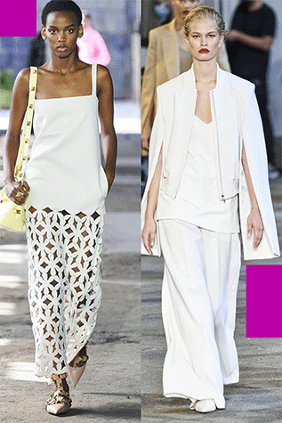
Las superposiciones
Jugar con diferentes largos y texturas es una tendencia que muchos diseñadores han propuesto y con la que quieren dar más carácter a sus colecciones.
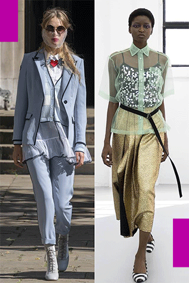
El mono
El mono es una pieza muy cool, una alternativa más casual al vestido camisero. Hay propuestas para todos los estilos.
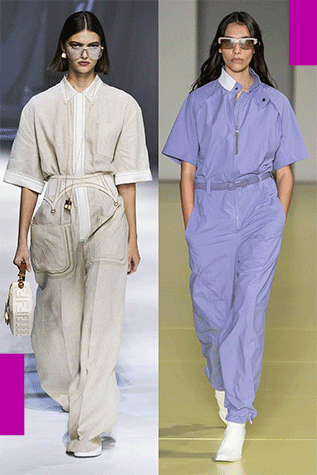
Vestido nude
Esta temporada el comodín perfecto de tu armario no será el vestidito negro sino el nude. Los vestidos en tono piel se han convertido en la alternativa para renovar tu fondo de armario. Con aires de diosa griega, hombros descubiertos y bajo abullonado o con falda estilo pareo. No dudes en elegir este tono para tu vestido favorito de la próxima primavera.
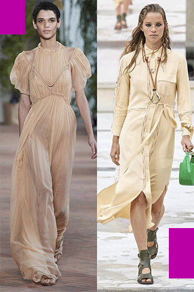
¿Te gustaría conocer algunos tips de moda para lucir mejor?